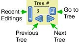

Phylogenetic trees
Phylogenetic trees represent the branching history of descent linking taxa, whether these taxa are species or genes. In Mesquite, a tree refers to the taxa in a particular taxa block and once created cannot be transfered to refer a different taxa block. (As explained in the page on taxa, "taxon" here is used as shorthand for "terminal taxon" or "OTU".)Characteristics of trees
Mesquite typically treats trees as rooted, although it is possible to de-root trees. Trees may contain polytomies (multifurcations) and also unbranched internal nodes. A tree in Mesqite does not need to contain all of the taxa in the taxa block, and indeed can contain as few as one taxon. Unlike MacClade, Mesquite does not support trees with observed taxa fixed in ancestral position. Mesquite can read, edit and write branch lengths in trees. In addition to length, a branch may have various other attributes such as width (e.g. for effective population size in population genetics) and color (for display purposes).Polytomies in trees are interpreted either as "soft" (uncertainty in resolution) or "hard" (simultaneous divergence). The default interpetation is specified in the Defaults submenu of the File menu. A change in this default applies to all projects and files. Individual trees can be marked as using a specific assumption, thus overriding the default (e.g., by using the Set Polytomy Assumption menu items in the Alter/Transform Tree submenu of the Tree menu of the Tree Window). The appropriate assumption for most phylogenetic studies is "soft", but calculations using soft polytomies are extremely difficult, and most Mesquite calculations yield results only with dichotomous trees and those with hard polytomies.
Analyzing trees
Trees can be visualized in various tree windows, and statistics about them presented in tree windows, the List of Trees window, and in charts. We will not attempt to summarize all of the options here, which are discussed elsewhere, in particular in the analysis links at left.Tree comparison methods include the following:
- Tree to tree similarity measures — The Shared Partitions module measures the number of partitions between taxa shared by two trees. The separately available TSV package includes other measures such as the Robinson-Foulds metric.
- Consensus trees — These are described below.
- Fits of trees into trees — The fit of a contained tree (e.g. gene or parasite) into a containing tree (e.g. species or host) can be measured by Deep Coalescence in the coalesce package.
- Taxon instability among trees — This module measures for each taxon how variable are its relationships among a set of trees. Taxa that are particulary unstable, i.e. whose placement is especially variable from tree to tree, score high on this index. Taxon instability calculations are illustrated in the example file at Mesquite_Folder/examples/Basic_Examples/tree_manipulation/13-instability.nex
Calculations with multiple trees
Often a biologist wants to perform an analysis with multiple trees, for example the many trees coming from a Bayesian analysis, to see how the analytical results vary among the trees. Mesquite offers several ways to explore analysis with multiple trees- Tree Window: In the tree window you can do an analysis using various options in the Analysis:Tree menu such as Values for Trees, Trace Character History, and others. When such an analysis is active, you can explore how different trees affect the results as follows:
- Scrolling from one tree to the next, or editing the tree, will cause the analysis to be updated to apply to the new tree
- The Step Through Trees feature (in the Tree menu) will automatically scroll from tree to tree, writing the results of calculations into a text file that can be read into a spreadsheet or statistical program. First, set up the calculations you want in the Tree Window. Currently, the calculations enabled for Step Through Trees include Trace Character History, Character-Associated Diversification, Values for Current Tree, and the Values section of the Tree Info Panel. If one or more of these calculations is activated in the Tree window, and then Step Through Trees is requested, a dialog box will appear allowing you to choose which calculations to summarize. Mesquite will then generated a tab-delimited text file that can be read into a spreadsheet editor.
- Scripts can be sent to the tree window to scroll from tree to tree, harvesting information along the way. Examples of such scripts are given in on the scripting page.
- Charts: Both Bar & Line Charts and Scattergrams (available in the Analysis menu) can be used to summarize one or two values over a series of trees. Choose New Bar & Line Chart for Trees, or New Scattergram for Trees. You can choose the source of trees, e.g. trees stored in the file, trees in a separate file, simulated trees.
- List of Trees window: For blocks of trees stored in the project, you can display the List of Trees window and choose special columns to display information about each tree. For instance, in this window go to the Columns menu and choose a Number For Tree from the submenu. A new column will appear listing each tree's value for that calculation.
- Others: Several other functions in Mesquite offer the opportunity to repeat a calculation for each of many trees. For instance, the Batch Architect can simulate sequence matrices on a series of trees and prepare a batch file for analysis of each.
Stored trees and tree blocks
Trees may exist within tree blocks that are stored in the data file. A tree block is a collection of trees stored as a unit. A single data file may contain more than one tree block, each containing from one to many trees.Mesquite calculations can use trees other than those stored in tree blocks in a data file. Most calculations can use trees that are temporarily created using simulations or randomizations specifically for the purpose of the calculation and then discarded. Also, a recently edited tree in the Tree Window might not be stored in the file if the user has not explicitly stored it in the file using "Store Tree" or "Store Tree As". More details on storing trees in tree blocks in the file are given below.
To create a new, empty tree block into which to store trees, select Taxa&Trees>New Empty Block of Trees... A new block of trees is automatically created if you ask in the Tree Window to store a tree and no block has yet been created to receive trees.
It is also possible to create tree blocks that are already filled with trees. For instance, if you want to make a duplicate of an existing tree block, select Taxa&Trees>Make New Trees Block from>Stored Trees. Other choices under Taxa&Trees>Make New Trees Block from> allow you to create tree blocks filled with trees resulting from simulations or randomizations, or other tree sources.
Trees stored in a tree block can be renamed or deleted in the List of Trees window (available in the Taxa&Trees menu). To rename, edit the tree's name in the list directly. To delete a tree, select the tree's row in the list window and choose List>Delete Selected Trees. Statistics about trees can also be viewed in the List of Trees window by adding the appropriate columns using the List menu.
Tree blocks stored in a file can be renamed or deleted in the List of Tree Blocks window (available in the Taxa&Trees menu). To rename, edit the tree block's name in the list directly. To delete a tree block, select the tree block's row in the list window and choose List>Delete Selected Tree Blocks.
For tree files with too many trees to be held in memory simultaneously, Mesquite can read the trees in directly from the file, one at a time, and discard each from memory after it is used (for instance, in charts or in the Tree Window). To do this use "Use Trees from Separate NEXUS File" as your tree source.
Tree Sources
Trees for viewing and analysis can come from various sources, including tree blocks in the current file, or simulations. Some tree sources modify other trees, such as Randomly Modify Current Tree.The tree source Concatenate 2 Tree Sources supplies trees from two separate sources as if they were one source. Trees from the first source have an attached value of "1", while trees from the second source have an attached value of "2". Concatenating tree sources can be useful for example to concatenate two large tree files that are too large to read in memory at once. To do this, first open a file that contains the taxa block that pertains to the two tree files. Then choose Save Trees to File from, Concatenate 2 Tree Sources. For the first source of trees choose Use Trees from Separate NEXUS file, and select the tree file. For the second source of trees choose Use Trees from Separate NEXUS file, and select the second tree file. Mesquite will then read all the trees in the first and then second tree file and concatenate them into a single tree file.
Consensus Trees
One source of trees available in Mesquite are consensus trees. A consensus tree summarizes the trees in another tree source; thus, you will need to tell Mesquite the source of the trees to be consensed. There are three sorts of consensus tree now available in Mesquite:- Strict Consensus Tree: only those clades present in all of the trees in the tree source will be present in the consensus tree.
- Semistrict Consensus Tree: only those clades that are present in at least one of the trees, and not contradicted by any of the trees, are present in the consensus tree.
- Majority Rules Consensus Tree: only those clades present in the specified fraction (>0.50) of the trees will be present in the consensus tree. You can specify the fraction using the "required frequency of clades" item in the dialog box that will be presented to you. You will also have the choice to "consider tree weights", in which case each tree will contribute the value of the tree weight rather than 1 to the tabulation of the frequency of clades contained therein. This is valuable, for example, if one has a tree file from a bootstrap analysis in which the trees from a single bootstrap replicate are each given a weight of 1/(number of trees in replicate) so that each replicate, rather than each tree, counts equally toward the clade frequencies.
Importing Trees
Trees can be imported from other files in several ways:- Copy & Paste: Open the other file in a text editor, select the tree descripting from the first parenthesis to the semicolon, and copy it into the clipboard. Then go to Mesquite's tree window and choose Paste Tree from the Edit menu. In doing this you should be careful that the taxon names are the same in the file as they are in your current project, or if the tree description uses numbers to refer to taxa, that the numbering is the same as in your current project.
- Reading blocks of trees into memory from another file: The advantage of this is that the trees are all in memory, so that calculations that need to reference the trees repeatedly can retrieve the trees quickly. The disadvantage is that many trees could take up much memory. There are two ways to read blocks of trees into memory:
- Link File (in the File menu) — This reads the contents of the separate file. The separate file remains linked, and Mesquite remembers that its information belongs to this separate file. If you modify the contents and re-save, the linked file will be modified.
- Include File (in the File menu) — This reads the contents of the other file and copies them into the current project file. The other file is then left untouched.
- Import File with Trees (in the Taxa & Trees menu) — This is a special version of Link or Include that specifically pulls out trees from the other file.
- Reading trees individually from another file: The following options can read trees individually on demand from other files. This means that at any give time only one of the trees is in memory, which permits use of large tree files without using up much memory. However, it means that some calculations are slower since the trees must be retrieved each time they are needed.
- Use Trees from Separate NEXUS file (where ever a tree source is chosen) — This is the basic version.
- Sample Trees from Separate NEXUS file (where ever a tree source is chosen) — This samples trees either to avoid a burn-in or to avoid examining too many trees.
- MrBayes Trees from .t file (where ever a tree source is chosen) — This version reads both the .t file and the associated .p file to recover the tree scores.
Filtering Trees
Trees used in charts, the tree window or to make a new tree block can be filtered. To do this, select Filter Trees from Other source as your source of trees. You will be asked for the original source of trees, and the filtering method. There are currently three filtering methods:- Selected Taxa Form Clade - retains only those trees in which the currently selected set of taxa form a clade on the tree
- Selected Taxa Convex in Tree - retains only those trees in which the currently selected set of taxa can be form a clade by rerooting the tree
- Tree Value Satisfies Criterion - retains only those trees whose value is greater than, less than or equal to a particular target value. For "value", one can use any of the available calculations that assign numbers to trees, such as treelength, tree depth, likelihood in character, tree asymmetry, and so on. The user is also asked what is the target value, and whether the criterion is to be greater than, less than or equal to the target.
Modifying trees automatically
Trees can be edited by hand, as described below, or the user can request Mesquite to automatically modify trees using the "Alter/Transform" modules. These modules can be used:- in the Tree menu of the Tree Window, under the Alter/Transform Tree submenu, or the Alter/Tranform Branch Lengths submenu. Selecting an item in these submenus performs the transformation on the tree in the Tree Window.
- in the List menu of the List of Trees window, in the Utilities submenu, in the Alter Trees or Alter Branch Lengths submenus. Selecting an item in these submenus performs the transformation on all selected trees, or on all trees if none is selected.
- to transform trees on the fly that are being supplied for a chart or tree window or making a new tree block for a file. To do this, select "Transform Trees from Other Source" whenever a source of trees is required. You will be asked for a source of trees to be transformed or filtered, and then for a means by which to transform the trees.
The Alter/Transform modules include:
- Root tree with selected taxa as outgroup
- Resolve Polytomies (to 0-length branches)
- Collapse Zero-length Branches
- Convert Negative Branch Lengths to Zero
- All Branch Lengths to 1
- Scale All Branch Lengths
- Ultrametricize
To use "Root tree with selected taxa as outgroup", you first must select the outgroup taxa in, for example, the Taxa List window. Then, choose the menu item "Root tree with selected taxa as outgroup" in the Alter/Transform Tree submenu of the Tree menu of the tree window, and in the Alter Trees submenu of the Utilities submenu of the List menu of the List of Trees window. This module will reroot the taxa in between the selected outgroups and the remaining taxa, if this is possible. If the tree cannot be rerooted so that the remaining taxa form a clade, then the tree will not be rerooted, and a warning will be given (perhaps visible only in the log). If the tree can be rerooted, then both the outgroup and ingroup will be monophyletic on the rerooted tree. In addition, if the tree has branch lengths specified, the root will be positioned at the midway point along the branch on which it is placed. That is, the length of the branch from the root to the ingroup will be equal to the length of the branch from the root to the outgroup. Future versions may allow user-choice of the branch length distribution. Adjusting of the length of the two basal branches is NOT done if the tree is already rooted between the chosen outgroups and ingroup.
Saving Trees to a file from a Tree Source
You can ask Mesquite to save a NEXUS file containing trees from a tree source. This feature can have many uses. For example, it can be very valuable if you want to create a tree file but don't want Mesquite to keep all of the trees im memory. Imagine you had a NEXUS tree file of 20,000 trees that you wanted to reroot; and the 20,000 trees could not all fit into memory. The following steps would allow you to create a new tree file with 20,000 rerooted trees, without ever having more than one in memory at once:- Select the outgroups in the List of Taxa window
- In the submenu Taxa&Trees>Save Trees To File from, choose Transform Trees from Other Source
- For the source of trees to be transformed, choose Use Trees from Separate NEXUS file
- Choose the NEXUS file containing the 20,000 original trees
- Specify where the new tree file is to be saved
This function was originally available from the File>Export menu as Export NEXUS Tree File from Tree Source.
Editing trees: The Basic Tree Window
The Tree Window shows a tree that can be edited and used in analyses. A new Tree Window can be requested by selecting Taxa&Trees>New Tree Window. (Mesquite allows multple tree windows, and so if you select this menu item a second time, you'll get a new tree window.) Many of the Tree Window's fundamental functions are controlled by its Tree menu. This menu contains items to select the tree source, store trees, and alter the tree. A second important menu is the Display menu, which controls the appearance of the tree. Additional menu items related to the Tree Window are found in the Analysis:Tree menu.Tree source
The Tree Window shows trees from a particular source (although the tree being shown could differ from those in the tree source, if you've recently modified the tree using the tools). The source of trees might be a tree block in the data file. In this case, as you used the blue arrows at the upper portion of the tool palette, you would be browsing through the stored trees, scrolling from one stored tree to another. Alternatively, the source of trees might be a coalescent simulation, in which case you would be browsing through gene trees representing replicate simulations of the coalescent process. Other tree sources may be available, and can be selected when you request the Tree Window for the first time or by using the submenu Tree>Tree Source>. One tree source, "Default Trees", offers a simple pectinate tree ("Default Ladder"), a full polytomy ("Default Bush"), and a symmetrical tree. It is available merely as a last resort, in case other tree sources are unavailable.We expect a common confusion will be that users will be unable to find the trees that they recently stored in the file. For example, when a new file is created, there are no stored trees, and hence the Tree Window would be forced to use another tree source (for example, "Default Trees"). If a user then stores a tree in the file (see next section), he or she might hit the blue scroll arrows of the Tree Window expecting to browse the stored trees, only to be shown one of the Default Trees. The problem is that the Tree Window is using Default Trees as the tree source, not Stored Trees. To see the trees stored in the file, select Tree>Tree Source>Stored Trees to change the tree source to Stored Trees.
Moving from Tree to Tree
To select which tree to view, use the tree scroll at the upper left of the Tree Window:
The left and right blue arrows take you to the previous and next trees, respectively, in the tree source. The Go To button takes you to the tree whose number is entered in the text area. The Recent Editings button offers you a drop down menu by which you can return to recently edited trees. The menu lists only trees that you have edited; it does not list the trees that came directly from the tree source, and is therefore not a complete history of recent trees. The number of little white triangles in the button indicates the number of recently edited trees stored.
Storing trees
Although the Tree Window can be used merely to browse existing trees, it will commonly be used as a tree editor, allowing the user to build a tree according to some prior hypothesis, or to modify trees to explore the effect of changes in the tree.Once a tree has been edited, the user may want to store this new tree in the file. Exactly how that is done depends on the tree source being used by the Tree Window:
- If the tree source is Stored Trees, then two menu items are available in the Tree menu to store trees, "Store Tree" and "Store Tree As...". For instance, imagine that you scroll through the stored trees until you get to tree number 5. If you edit it using the tools of the tool palette, then you select Store Tree, your newly modified tree will replace the original tree number 5 in the tree block. If instead you choose Store Tree As, you will add your modified tree as a new tree at the end of the tree block, leaving the original tree number 5 untouched. Thus, Mesquite assumes that you are potentially editing the original tree in the tree block whenever you edit the tree. However, the original copy is not replaced by your edited version until you select "Store Tree". Until you select this, your modified tree is maintained as a temporary tree associated with the tree window, and not stored in the tree block.
- If the tree source is not Stored Trees then you can't modify the original trees, because they are merely temporary trees, produced by something like a simulation. Thus, in this case there is no Store Tree menu item available. Instead, there is a "Store Copy of Tree As" menu item. This acts more or less like Store Tree As, in that the tree is added to a tree block.
Tree Info Panel
The Tree Window has a Tree Info Panel, available by touching the blue "i" ( ) in the tree window. This panel shows basic information about the tree and its notes. It also has a Values section in which you can display values from various calculations (character likelihood, etc.).
) in the tree window. This panel shows basic information about the tree and its notes. It also has a Values section in which you can display values from various calculations (character likelihood, etc.).Tools
At the left side of the Tree Window is a tool palette, containing tools that you can use to interact with the tree. Exactly which tools are available will depend on the modules installed and loaded. In the description of tools below, it will be assumed that a basic set of modules is installed and loaded.Some tools act when they are touched on a branch of the tree; others act when a branch is touched then dragged and dropped. Some tools behave differently if a key such as shift or control is held down when the tool is used. These details are explained below. Some explanation of the tool is also given in the window's Explanation Area when the tool is selected in the palette. The currently selected tool has its button darker than the rest in the tool palette.
Some tools have options that can be set. If so, then the button for the tool in the tool palette will have a small black triangle indicating the availability of a drop down menu. If you touch the button and hold down the mouse for a moment, the menu will appear to allow you to make choices.
The following tools change the topology of the tree (the fundamental relationships among taxa implied by the tree). Some of these tools might not be available if their controlling modules are not installed or loaded.
| Tool |
Action |
|
| Arrow |
If touched on a branch, dragged and dropped on another branch, the former branch is reattached to the latter. Also can be used to select taxa and branches. |
|
| Interchange branches |
If touched on a branch, dragged and dropped on another branch, the two branches exchange positions. Can be used to rearrange a polytomy, but can also be used for branches distant on the tree. |
|
 |
Collapse branch |
Collapses branches to yield polytomy. Also removes unbranched internal nodes. |
 |
Collapse all |
Collapses all branches in clade. If option or ALT is held down, collapses all branches below node touched. |
| Reroot |
Reroots tree at branch touched. |
|
 |
Prune clade |
Cuts clade out of tree. Taxa cut out remain within the data file, but are not included in this particular tree. |
| Insert unbranchednode |
Inserts node along branch. Currently used primarily in combination with assigned lineage widths to indicate population fluctuations for coalescent simulations. |
|
 |
Searchwithin clade |
Rearranges the branches above the node touched looking for a better tree. The objective function used (e.g., treelength, or something else) is chosen using the Objective Function submenu of the tool's popup menu. You can also choose the nature of the branch rearrangements used, and whether the tool looks for trees with higher or lower values of the objective function. |
| Tool |
Action |
|
 |
Assign branch length |
Brings up a small editable area in which to enter a branchlength. |
 |
Stretch branch |
Click and drag on branch to stretch its length. |
| Adjust node position |
Stretches branch lengths above and below node to allow node to change position without changing positions of other nodes. |
|
| Assign lineage width |
Assigns a width to the branch. Currently used to assign effective population sizes for population genetics calculations. |
| Tool |
Action |
|
| Zoom |
Zooms the magnification to enlarge the tree. Holding down Option or Alt shrinks the tree. If you click and hold on the tool button, a drop down menu lets you reset back to standard magnification. Note also the Drawing Size submenu in the Display menu. |
|
| Ladderize |
Rotates nodes to bring the largest clades on the right side of the tree. Does not affect topology of tree. If option or ALT key held down, ladderizes to left. |
|
| Draw clade as triangle |
Draws clade as small triangle to save space in drawing the tree. The full relationships within the clade remain, but are hidden. Clicking again will expand the clade to be viewed again. This drawing mode may have bugs. |
|
 |
Magnify clade |
Magnifies the image of the tree so that only the clade touched is shown. Touching again on the node shows the whole tree |
 |
Branch info |
Shows available information about the branch and calculations concerning it. |
 |
Color branch |
Colors the branch. Control-click colors clade. Repeat click erases. Shift-click shrink wraps color. Touch and hold the button to obtain a menu to select color used. This is not equivalent to the Fix States tool of MacClade. |
| Name node |
Gives a name to the node. This name must be unique, and different from the names of terminal taxa. |
|
| Select branches in clade |
Selects all the branches in a clade. Control-click extends selection. Shift-click shrink wraps selection. You can also use the arrow tool to select branches. |
|
 |
Select taxa in clade |
Selects all the taxa in a clade. Control-click extends selection. Shift-click shrink wraps selection. You can also use the arrow tool to select taxa. |
| Annotate node |
Attaches a note to a node. An asterisk appears over the node. The note can be seen by passing the Annotate cursor over the branch, or by turning on "Show Notes On Tree" using the menu that drops down from the Annotate node button in the tool palette. |
|
 |
Show picture |
Shows image attached to taxon. Click again to hide. Control-click to attach picture. |
 |
Hyperlink |
Shows web page or another data file. Shift click to enter link explicitly. Control-click to select local file. |
 |
Search for Taxon in Database |
Searches a taxonomic database for the taxon name that is touched. The database searched (e.g., Tree of Life Web Project, iSpecies, Catalogue of Life, GenBank) can be chosen in the tool's popup menu. |
| Node Age Constraints |
Assigns constraints on ages to a node. When you touch on a node, a text edit field appears.To indicate the minimum age is 2.0, enter "2.0+". To indicate the range is 2.0 to 4.0, enter "2.0-4.0". To indicate the maximum is 4.0, enter "0.0-4.0". To say age is exactly 3.0, enter "3.0". These constraints are not yet used by standard Mesquite modules |
Selecting taxa and branches
Selecting branches or taxa in the tree window can be done by the standard arrow tool, or by special tools for selecting clades. If no branches are selected, then the entire tree looks normal. However, when some branches are selected, the other branches (those not selected) are dimmed. This can be useful to highlight branches both on trees and in other contexts such as Node Scattergram. It also allows other modules to restrict calculations to only the selected branches, for example. Taxon selection can be seen by the highlighting of a taxon name.To select branches or taxa you can:
- with the standard arrow tool, click outside of any branches or taxon names and drag the selection rectangle to encompass the branches & taxa you want to select. A branch is selected if the node at the descendant end of the branch is included in the rectangle. A taxon is selected if any part of its name is included in the rectangle.
- with the standard arrow tool, click directly on a branch or taxon name. If you hold down the Control (or Command) key while selecting, the newly selected branches/taxa will be added to the set selected (unless the newly selected branches/taxa had been already selected, in which case they will be deselected). If you hold down the Shift key while selecting, the selection will shrinkwrap by clade: all branches/taxa will be selected in the smallest clade including all selected branches/taxa.
Alter/Transform menu items
In the Tree menu of the Tree Window are two submenus by which you can change the tree, "Alter/Transform Tree" and "Alter/Transform Branch Lengths". These provide various utilities to change the tree, including its branch lengths. Some, such as "Scale All Branch Lengths", affect all branches of the tree simultaneously. See the section on automatic modification for more details.Analyses
The Tree Window has, in its Analysis:Tree menu, menu items that yield analyses using the current tree in the Tree Window. Which analyses are available depends on what modules are installed and loaded. Typically the following will be available at least:- Trace Character History - Illustrates a history of character evolution on the tree. Described in detail in the chapter on reconstructing ancestral states.
- Tree Legend - adds a small legend to the Tree Window. The legend can describe information about the tree, including the results of calculations done using the tree. When the legend is in the Tree Window, an additional menu appears, the Legend menu, by which you can choose to show or hide lines of information.
- Values at Nodes - shows values associated with nodes, either by coloring the nodes or labeling them. These values describe information about the nodes, such as a statistic calculated over the clade above the node. At the moment there are few such values available (notably, the reconstructed character state in a continuous character, also available through Trace Character History).
How trees are drawn
There are many options for the appearance of trees as drawn in the Tree Window and other windows displaying trees. Trees may have diagonal, square or circular branches; they may be drawn black on white or green on blue; they may be drawn so that apparent branch length is proportional to assigned branch length. These options are controlled by the Display menu.Some of the menu items in the Display menu are:
- Tree Form - Chooses general form of the tree. Some are merely graphical, others involve analyses such as PlotTree and PlotTree3D (which plot the tree in a 2D or 3D space) and Contained Gene (or Other) Trees (which shows gene trees within species trees, or parasites within hosts).
- Set Current Form As Default - Sets as default the tree drawing style currently in use (e.g. Diagonal Tree, Balls & Sticks etc.). It does not capture all of the current parameters chosen for that drawing form (background color, spot sizes, etc.).
- Background Color - Sets the color of the field on which the tree is shown.
- Branch Color - Sets the color of the branches. These color are not retained with the tree, but are for graphical purposes only. In this regard it is different from the Color Branch tool, whose colors are retained with the tree.
- Drawing Size (Only in the basic Tree Window) - This submenu has three choices: Size Automatically, Scale to Fit, and Fixed Drawing Size. When Size Automatically is chosen, Mesquite attempts to choose a size that permits the tree to be drawn compactly and yet visibly. This may require the tree drawing to be larger than the window, and navigable with scroll bars. When Scale to Fit is chosen, the tree will be fit within the window even if this makes the tree too small to see easily. When Fixed Drawing Size is chosen, you can set the size of the panel in which the tree is drawn.
- Float Legends (Only in the basic Tree Window) - When the tree window has scroll bars to move around a large tree, this item allows you to choose whether the legends such as the Tree Legend and Trace Character Legend are anchored to the panel in which the tree is drawn or, anchored to the window itself.
- Font, Font Size, Font Color - Sets the font characteristics of the taxon names and node names.
- Names - Determines what names are shown and whether taxon names are colored by the taxon group.
- Orientation (Only for some tree forms) - Chooses whether the root to terminal orientation is up (classic phylogeneticist or paleontologist), to the right (molecular evolutionist), bottom (population geneticist or mathematician) or left (?)
- Branches Proportional to Length - Determines if the drawn lengths of branches are proportional to their assigned lengths. Otherwise, the tree drawing routine chooses node positions at its own convenience.
- Save Macro for Tree Drawing - Saves the current tree drawing specifications (form, color, orientation, etc.) as a macro. The macro will then appear under the Macros For Tree Drawing submenu, and can be used later to set other tree windows to use the same specifications.
Printing trees and saving graphics files
Mesquite's Tree Window offers two menu items for printing trees: Print Tree and Print Tree to Fit Page. The former prints the tree in its current size, even if that requires it to be placed over multiple pages. The latter automatically reduces or enlarges to tree image to fit a single printed page. It attempts to choose landscape or portrait mode to maximize the size of the fitted image.
You can also use Save Tree As PDF in the file menu to save the tree image to a PDF file. This works well except that legends (such as the character trace legend) are not included in the image because of an apparent bug in the library we are using.
An alternative way to generate image files is to ask to print the tree image, then use your operating system's Print dialog box to direct the output to a file (e.g., postscript or PDF) instead of a printer. Printing to a PDF file is built into the Print Dialog box of Mac OS X and therefore is easy to do. On Windows, printing to a pdf or postscript file is not so straighforward. To do this, use a postscript printer and print to file. The ".prn" file created might in fact be a ".ps" postscript file on the inside. If you are using Windows but don't have a postscript printer then you can add a virtual printer via the Control Panel. Choose a postscript printer driver (e.g. a Laserjet marked as "PS"). Postscript and pdf files are editable by programs such as Adobe Illustrator.
See also this page on obtaining publication-quality tree images.
Dependent Tree Window
This window shows the same tree as in the Tree Window (hence it is "dependent"). It is available in the Tree menu of the Tree Window. It is useful when analyses or graphics are desired for the Tree Window, but which would conflict visually with currently running analyses or graphics. Thus, the Dependent Tree Window gives additional space on which to display graphics and analyses. As the tree in the Tree Window is changed, the tree in the Dependent Tree Window is also changed. Note: If the Tree Window is closed, the Dependent Tree Window will close also.Users may find the menus of the Tree Window and Dependent Tree Window somewhat confusing when the latter is in use, as both windows include some menus of the other. This is a consequence of Mesquite's automatic menu arrangement; we realize it is not optimal in this case.
Mirror Tree Window
This window, like the Dependent Tree Window, shows the same tree as in the Tree Window. However, the Mirror Tree Window shows it twice, in mirror image. This allows you to compare, for instance, two different traced characters visually, as in this example. The analysis shown on the left side is controlled by the Left side submenu; that on the right by the Right side submenu.Users may find menus confusing when this window is in use; see comments under Dependent Tree Window.